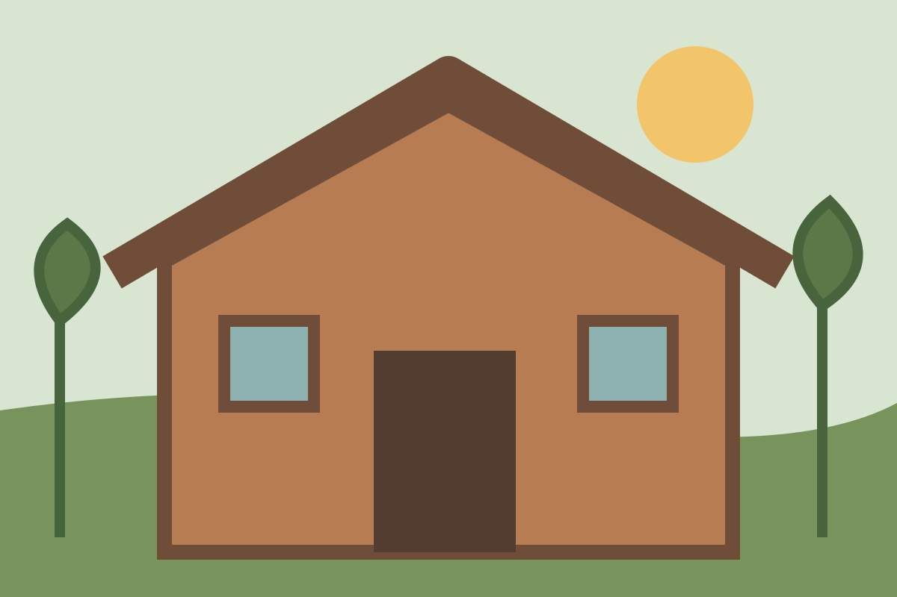

Manja — ਮੰਜਾ
A woven cot used for sitting and sleeping, commonly associated with courtyards and open-air domestic life.
COLLECTION 03 · PEOPLE & PLACES
The architecture, shared spaces, routines and relationships that made village life distinctive.

SPACES OF BELONGING
Village heritage is found in courtyards, shared gathering places, homes, wells, workshops and the everyday objects that made these spaces useful and welcoming.
A woven cot used for sitting and sleeping, commonly associated with courtyards and open-air domestic life.
A small traditional seat, often made from wood and sometimes woven with cord or tape.
A storage chest used for keeping clothes, textiles and household belongings.
A portable oil or kerosene lantern used for lighting before widespread electric access.